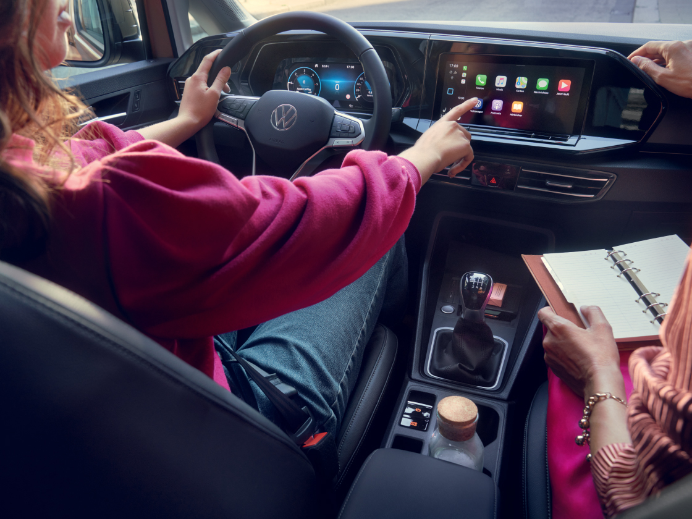
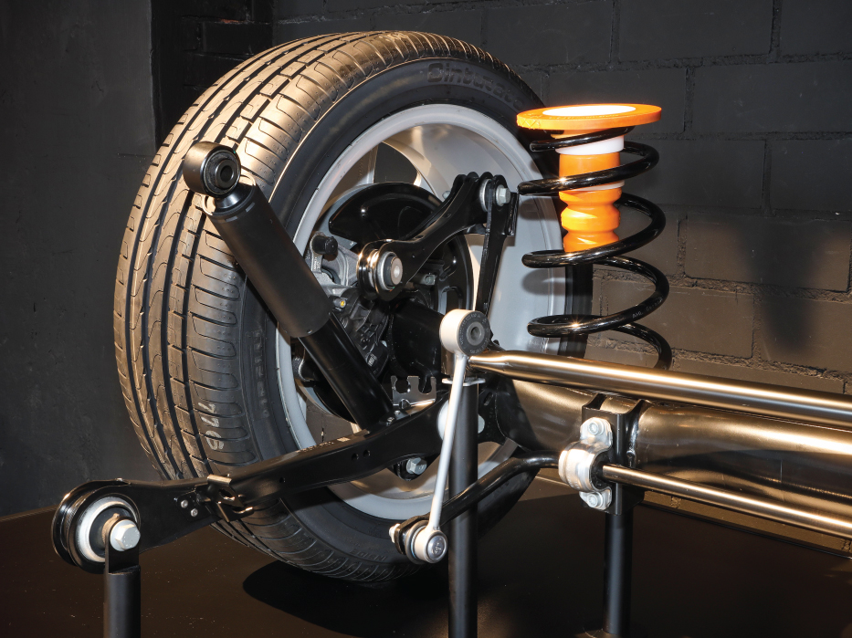
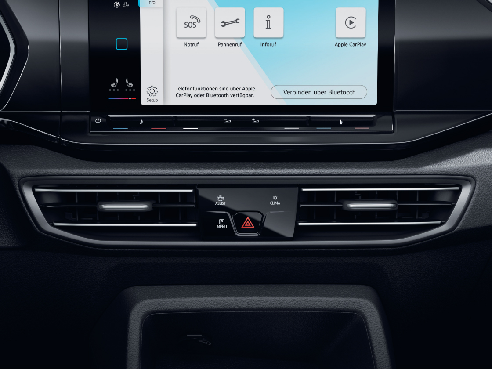

LKSWAGEN
LKSWAGEN
Caddy Life
En büyük özelliği çok çekici olması.

Her renkle uyumlu.
Caddy’nin gövde rengi kapı kolu, tamponları ve piano black yan aynaları olabildiğince göz alıcı.
Yolunuz her zaman aydınlık.
Işık ve görüş paketi otomatik yanan farlar, far sensörü, yağmur sensörü ve eve geliş evden çıkış fonksiyonuyla hem güvenliğiniz hem de konforunuz için Caddy’de.
Aynalarıyla da göz alıcı.
Tek hareketle aynaları katlayın ya da soğuk havalarda oluşan buğuları çözün. Caddy’nin elektrikli katlanabilir ve ısıtmalı yan aynaları en şık özelliklerinden biri.
Hem kullanışlı hem güzel.
Caddy’nin dış görünüşündeki en göz alıcı parçalardan biri de siyah renkli tavan çıtaları.
Detaylarıyla tam.
Caddy’nin karatılmış arka camları sizi sıcak günlerde güneş ışığından korurken, meraklı gözlerden de uzak kalmanızı sağlıyor. Ayrıca Caddy’nizi daha çekici gösteriyor.
>
İçine bir göz atmanız teknolojisini anlamanız için yeterli.

Buradan her şeye hakimsiniz
Siz hızlandıkça direksiyon sertleşiyor ve sürüş konforunun yanında yüksek güvenlik de sağlıyor. Radyo kumandalı deri kaplı yeni Servotronik Direksiyon, sürüş konforunuza konfor katıyor.
Merak etmeyin, her zaman yanınızdayız.

Onunla hem yolcular hem de yayalar güvende.
Şehir içi acil frenleme özellikli “Front Assist” sistemi yayaları, bisikletlileri ve araçları tespit edip, sürücüyü tehlikeli durumlara karşı uyarıyor. Eğer sürücü zamanında tepki vermezse sistem otomatik frenlemeyle cevap veriyor ve gerekirse tehlikeli bir sürüş durumu varsa kaçınma manevrası bile yapabiliyor.
Arka Süspansiyon

Konfor Caddy'de standart.
Caddy’nin tamamen yenilenmiş helezon yaylı arka süspansiyonu sayesinde rahatlığı arkada bulacaksınız. Konforu daha çok artırmasının yanı sıra yol tutuşunu da daha yukarı seviyelere çeken yeni süspansiyon sisteminin bir avantajı daha var, o da az yer kapladığı için daha geniş bagaj kapasitesi sunabilmesi.
Daha fazla keyif için daha fazla konfor.

Kışları sıcak yazları serin.
Alerjen filtreli çift bölgeli klima sistemi - "Air Care Climatronic" klimasıyla Caddy’nin havasını anında değiştirebilirsiniz. İçini istediğiniz sıcaklığa getirmek için yalnızca klima düğmesine dokunup derecesini ayarlamanız yeterli.
Motor & DSG

Dahası Güç
Zorlu yokuşlar, uzun otobanlar, ağır yükler… Elinizin altında 122 PS güç ve 320 Nm tork üreten bir Caddy olunca hepsi birer keyfe dönüşüyor. Caddy’nin 2.0 TDI motoru artık yalnızca daha güçlü değil, daha da verimli.
DSG
Caddy’nin 7 vitesli çift kavramalı DSG şanzımanı çekiş gücü kesilmeden vitesin otomatik olarak pürüzsüz bir şekilde değiştirilmesini sağladığı gibi kendini de sürücünün sürüş stiline uyarlıyor. Yeni joystick vites kolu dizaynıyla da sınıfında ayrışıyor.
Volkswagen Hakkında Modeller Ve Fiyatlar İletişim Sosyal Medya
İkinci El Araçlar Tüm Modeller Yetkili Satıcı Facebook
Ticari Araçlar SUV Modeller Online Servis Instagram
Satış Sonrası Hizmetler Araç Fiyatları İletişim Ve Destek Twitter
Kampanyalar Aksesuarlar Bilgi Formu Youtube
|